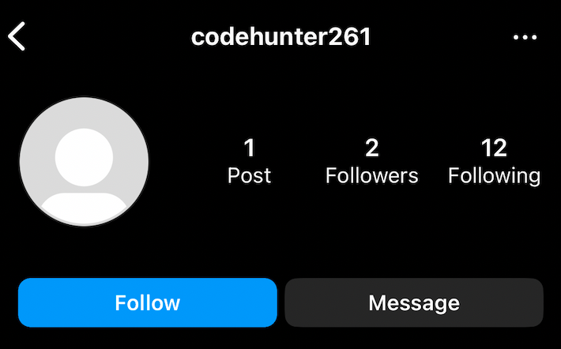
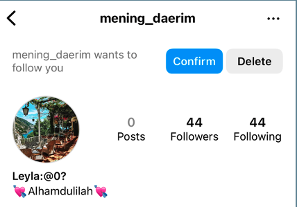
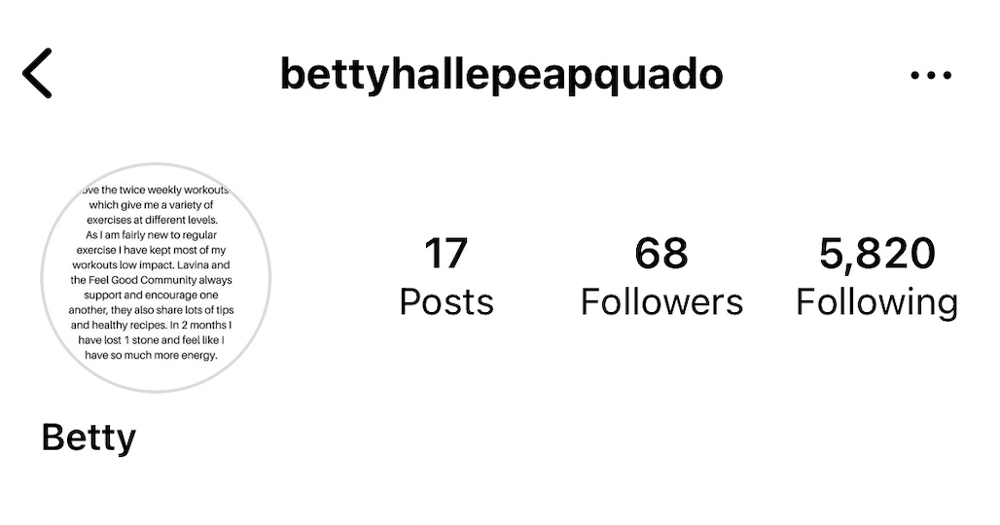
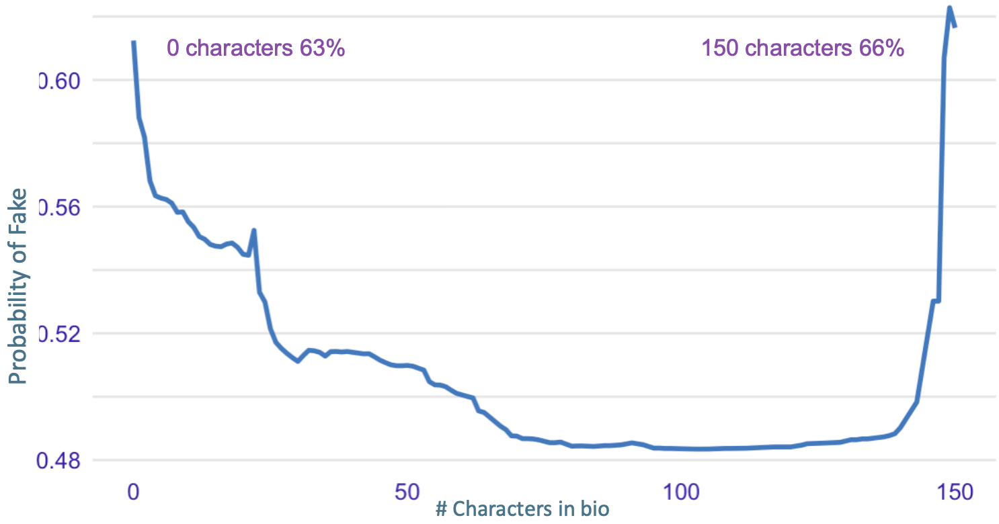
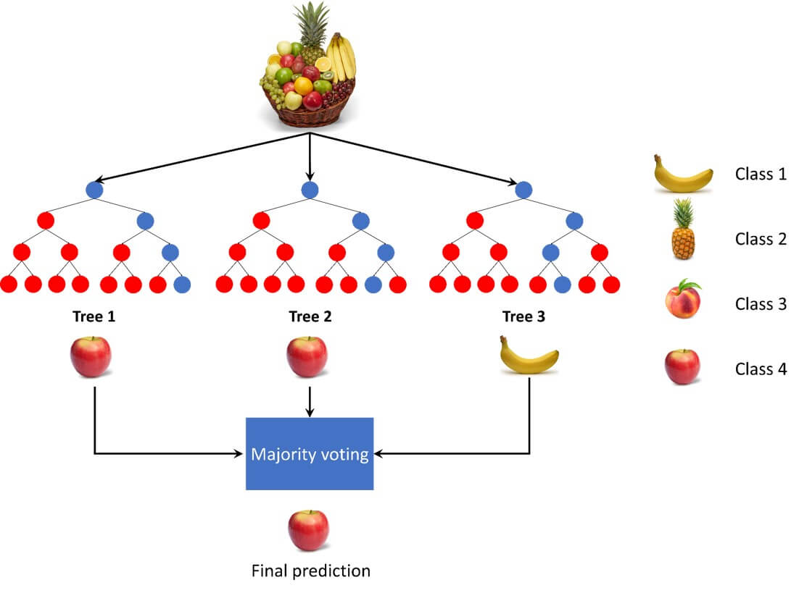
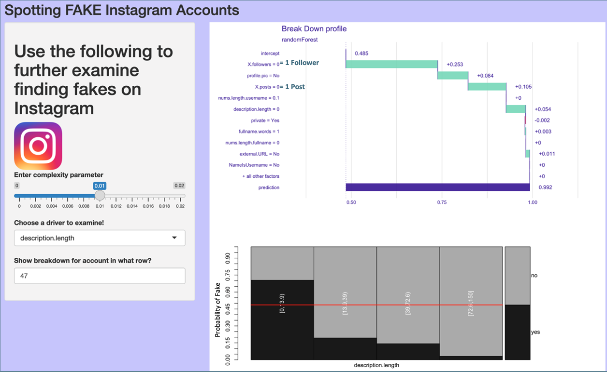
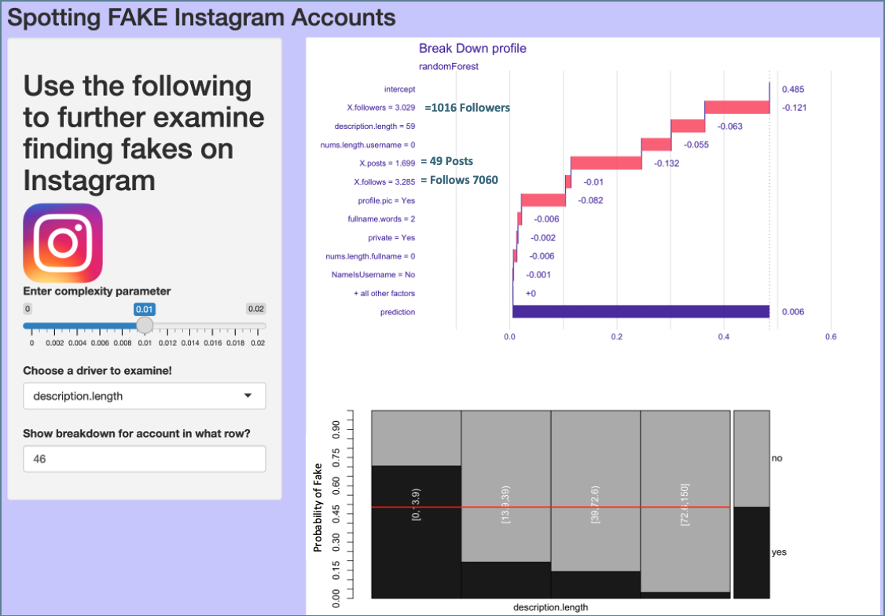

Key Findings: Exercise caution when interacting with accounts with the following characteristics.
- If the account has less than 3 followers
- The account has made fewer than 2 posts
- If the user lacks a bio or possesses an extensive one
Note: The term "Fake" is used to categorize accounts that could be scammers or spammers.
Note: The tips provided is derived from our dataset.

If a user has less than 3 followers, there is a 79% chance the account is fake.
Account 1: Shows what an account that a users would want to avoid. Low follower count
Althougth at the moment accepting a follow request or interacting with this type of account seems harmless. According to the FTC social media scams "The top platforms identified in these reports were Instagram (36%),
Facebook (28%), WhatsApp (9%), and Telegram (7%)." Meaning that 36% of all social media scams were from Instagram users.
___________________________________________________________________________________________________________

There's a 93% probability of an account being fake if it has 0 to 2 posts.
Account 2: Shows what an account that a users would want to avoid or limit interactions.
Engage with accounts that have at least 2 posts. There's a 93% probability of an account being fake if it has 0 to 2 posts.
Conversely, Instagram accounts with 2 or more posts reduce the likelihood of the account being spam or a scam account by 15%.
___________________________________________________________________________________________________________
There's a 63% likelihood that an account is fraudulent if it lacks a profile biography.
Below are examples of accounts: one without a bio and another with an extensive bio.

In the realm of Instagram bios, users without a bio or those with an extensive bio containing 150+ characters may raise suspicions regarding potential scammer activity.

This plot shows the probability of an account being fake is 63% in the absence of a bio,and 66% when the bio exceeds 150 characters.
___________________________________________________________________________________________________________
Regression & Data
Using Random Forest a supervised machine learning algorithm

A random forest regression explained: Imagine you have a basket of various fruits (features) like: apples,oranges,pineapples and peaches
each with different weights and sizes. Random Forest Regression is like asking a group of diverse fruit experts (decision trees) to collectively estimate the average weight of a piece of fruit based on its size,
combining their expertise to give you a more accurate and reliable result. Our model's predictions have an accuracy of 93%.
Shiny Output
Creating an app we are able to select any account in our data and examine what factor the account to be labled fake.
Break Down of an Instagram account with (really) high chance of being FAKE
The likelihood of this account being fake is 99.2%. A user might want to think twice before interacting with this account.
Note: Log models are used of X.followers of 0 is actually 1 follower.

___________________________________________________________________________________________________________
Reading the Break Down: Starting from the top intercept of 49.8% which is our overall fake rate in our dataset.
The plot shows a break down of each variable with the green bars and red bars. For example the number of posts or
if the account is private.
- Green Bars: increase in chances of being fake
- Red Bars: decrease in chances of being fake
___________________________________________________________________________________________________________
Break Down of an Instagram account with low chance of being FAKE
The likelihood of this account being fake is 0.06%. A user should always be cautions of random accounts, but with account is safe to interact with.
Note: Log models are used of X.followers of 3.029 is actually 1016 followers.

Data Dictionary
| Name |
Description |
| X.Followers |
Number of followers a user has |
Numerical |
| X.Posts |
Number of post a user has |
Numerical |
| Nums.length.username |
Ratio of numerical characters in username to its length |
Numerical |
| Profile.Pic |
User has profile picture or not |
Catagorical (Yes,No) |
| X.Follows |
Number of accounts a user Follows |
Numerical |
| Private |
Account is Private or not |
Catagorical (Yes,No) |
| Nums.Length.Fullname |
Ratio of numerical characters in full name to its length |
Numerical |
| external.URL |
Has external URL |
Catagorical (Yes,No) |
| NameIsUsername |
Username and full name are identical |
Catagorical (Yes,No) |
| Description Length |
Number of characters in Bio |
Numerical |
Tips and Guides from Instagram
Instagram is aware of how often people fall victim to these scammers. Here are some additional help to avoid getting
scammed.